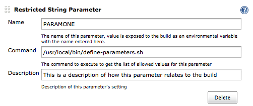

A set of two Jenkins parameter plugins which have their value restricted to a set of allowed values to be picked from a list provided by an external program. The restricted string parameter allows for setting a single parameter value. The restricted string dynamic parameter allows for setting two build parameters. For both, the external program will have access to information about the current logged in user. For the dynamic parameter, the command will also have access to the current value selected for the first parameter.
After installation two new parameter options will be available when configuring a job in Jenkins.
Configure the restricted string parameter specifying the name of the environmental variable to set with the value of each selected item, the command to execute to get the list of allowed values and a description of how the parameters relate to the build.
The environmental variable JENKINS_RSP_USER will be set to the username of the user currently logged into Jenkins.
Configure the restricted string dynamic parameter specifying the name of the environmental variables to set for each selected item, the commands to execute to get the list of allowed values and a description of how the parameters relate to the build.
The environmental variable JENKINS_RSP_USER will be set to the username of the user currently logged into Jenkins. The environmental variable JENKINS_RSP_VALUE will be set to the value selected for the first parameter.
The values selected during a build will be available in the parameter names specified in the configuration.
The following screenshots show the parameter plugin in action using the configuration from the screen shots in the configuration section.
Initial parameter state.
Showing options provided by command.

Initial parameter state.
Showing options for second paramater provided by command.
Showing options for first paramater provided by command.
Showing options for second paramater changing based on selection of first parameter.